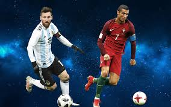

¿DE QUE VAMOS?

Futbolaso es una pagina dedicada única y exclusivamente al deporte que mas nos apasiona el futbol, con noticias actualizadas y todo lo que sucede
en en el mundo del futbol. Nuestros lectores podran comentar sus opiniones, dudas o sugerencias en nuestros foros sobre distintos temas. También encontraras
pequeños juegos , con los cuales podras pasar el rato y apoyarnos probando nuestros juegos. Bienvenidos todos.
La liga Santander
La liga Santander es una de las competiciones mas importantes a nivel mundial donde se dio uno de los partidos mas vistos de esta jornada el cual fue Barcelona vs Atletico de Madrid donde Luis Suárez y Messi, los delanteros que hoy dan sentido al fútbol del Barça, jugadores que ponen el punto y final con su pegada y clase al juego de un colectivo paciente y solidario, sellaron prácticamente el título de Liga. Muy pocas veces ha habido un equipo tan previsible y también tan regular como el de Valverde. Las victorias caen siempre al final, después de una larga espera y desgaste, y de la misma manera, incluso ante el desafiante Atlético de Simeone.